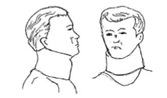

- Sangat berbahaya karena didalamnya ada MS(Medula spinalis/ SSTB) dan pembuluh darah
- Cegah terjadinya shock
- Bersihkan jalan nafas
- Pasang Colar spine (penyangga leher)
- Angkat ke atas tandu (Stretcher)
- Baringkan dengan dipasang ganjal sekeliling leher